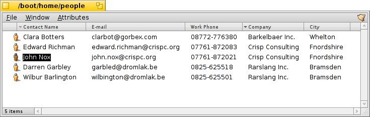

People
People
| Deskbar: | ||
| Ścieżka: | /boot/system/apps/People | |
| Ustawienia: | ~/config/settings/People_data |
People to prosta baza kontaktów wykorzystująca atrybuty systemu plików Haiku do przechowywania adresów i innych danych kontaktowych. Każdy kontakt jest zapisany jako osobny plik Osoby ze swoimi danymi w atrybutach. Wszystkie z nich są indeksowane, a więc można je przeszkuwiać za pomocą zapytań.

Atrybut Grupa na dole pozwala przypisać osobę do jednej lub większej liczby grup. Jest to użyteczne do „masowego” wysyłania mejli do osób, które np. pracują nad jednym projektem. Menu wyświetla wszystkie już istniejące grupy. Jeżeli osoba należy do więcej niż jednej grupy, ich nazwy są oddzielone przecinkami.
Pliki Osób zazwyczaj są zapisywane do katalogu /boot/home/people/. Aby zobaczyć listę wszystkich swoich kontaktów, wystarczy otworzyć ten katalog i wyświetlić interesujące atrybuty. Jeżeli chcesz trzymać te pliki w wielu różnych katalogach, możesz użyć zapytania aby wyświetlić je wszystkie w jednym oknie.
Te pliki mogą być traktowane jak każde inne: można je sortować po atrybutach (z klawiszem SHIFT przy kliknięciu można nawet dodać drugorzędną kolejność) oraz oczywiście usuwać, duplikować i zmieniać ich nazwy. Również informacje kontaktowe mogą być bezpośrednio edytowane: kliknięcie na atrybucie (lub ALT E) w celu edycji działa tak samo jak przy zmianie nazwy pliku. W trybie edycji, TAB i SHIFT TAB pozwalają poruszać się między kolumnami.